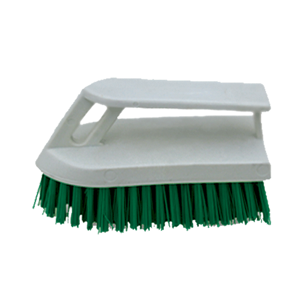

Cepillo de Plástico tipo plancha
PRECIO: $38.00
CODIGO DEL PRODUCTO: 8226902004
DESCRIPCIÓN: El cepillo para lavar tipo plancha es el complemento perfecto para tus herramientas de limpieza, te permite tallar y desinfectar todo tipo de superficies. Fabricado con Ultra Fresh para prevenir la creación de bacterias y malos olores.